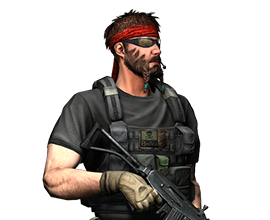
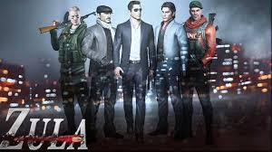
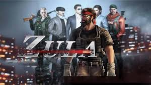

.jpg)
امید : رییس تیم زولا
او در اوشکادار استانبول متولد شد. بعد از فارق التحصیلی از دانشگاه
افسری ترکیه به مارون برت پیوست. به واسطه صداقت، شجاعت و تلاشش موفق شد در بین مافوق های
خود
احترام زیادی به دست آورد. در یکی از ماموریت های خود اطلاعات مهمی در مورد عملیات خاطرناک
غیرقانونی که درون دولت در حال انجام بود به دست آورد. ...
او شروع به پاکسازی دولت از این افراد کرد. این سازمان
خطرناک، گلادیو
را
استخدام کرد تا دمیر را بکشد. در روز عروسی دمیر، گلادیو به تالار عروسی حمله کرد و
بسیاری
از نزدیکان و همچنان همسر دمیر را به قتل رساند. بعد از آن روز، دمیر زندگی خود وقف
گرفتن
انتقام از آنها کرد و گروه زولا را تاسیس کرد.
داستان زولا
ترکیه در طول مدت 50 سال اخیر در معرض خطر نفوذ سرویس های اطلاعاتی خارجی قرار داشته است.
در
نتیجه این اقدامات، تعداد افراد بیگناه زیادی در نقاط مختلف ترکیه کشته شدند. مقامات دولتی
برای
جلوگیری از این اتفاقات تصمیم به مداخله در عملیات های این سرویس ها گرفتند.
به منظور پایان دادن به این وضعیت، سروان دمیر ماموریت گرفت که به گلادیو نفوذ کند و در طول
این
ماموریت موفق شد محموله عظیم اسلحه که متعلق به یکی از سرویس های جاسوسی خارجی بود را کشف و
نابود کند. در طول این عملیات، پريالّوشش دمیر لو رفت و او تبدیل به هدف شماره یک گلادیو
شد.
...
اگرچه او ناپدید شده بود ولی آنها فراموشش نکردند و در نهایت او را
پیدا
کردند. در روز جشن عروسی دمیر، گلادیو حمله ای را ترتیب داد که در آن دمیر زخمی شد ولی
همسر
و سایر بستگان خود را از دست داد.
دمیر دوباره بدون هیچگونه ردی ناپدید شد و تمرینات خود را برای گرفتن انتقام آغاز کرد.
در
هرجای کشور مردم را برای متوقف کردن گلادیو ترغیب می کرد. زولا از شعله های آتش خشم
دمیر
متولد شد.

فریدون : رییس تیم گلادیو
او در شهر اشکلون در خانواده ای کارگری متولد شد. لری دانش آموز بسیار باهوشی بود. بعد از
اتمام
دبیرستان موفق به دریافت بورس تحصیلی دانشگاه هاروارد شد. او در رشته ارتباطات بین الملل
تحصیلات خود را به اتمام رساند و در شرکتی که در خاورمیانه فعالیت داشت، مشغول به کار شد و
بعد
از مدتی مدیریت دفتر خاورمیانه را به عهده گرفت.
...
استراتژی های که او پیاده سازی می کرد توسط سازمان های اطلاعاتی مورد
استفاده قرار می گرفت. همه چیز برای اون خوب پیش می رفت تا زمانی که متوجه شد خانواده
اش بر
اثر حمله موشکی در اشکلون کشته شده اند. برای گرفتن انتقام خانواده اش به یکی از این
سازمان
های جاسوسی پیوست و بعد از مدتی به استخدام گلادیو در آمد.

اعضای تیم زولا
امید
مراد
چنگیز
اسرافیل
بابک
شهرام
بهروز
ندا جوان

اعضای تیم گلادیو
فریدون
خسرو
داوود
شاهین
سارا
حامد
ال پاترون
النا آصف
مهمترین مشخصه ای که گلادیو را از دیگر سازمان ها متمایز می کند موفقیت آنها در استراتژی است که در مبارزاتشان پیاده سازی می کنند ایوان، فرمانده منطقه ای گلادیو وظیفه مدیریت سرویس های اطلاعاتی کشورهای خارجی که در ترکیه مستقر هستند را به عهده داشت.
...